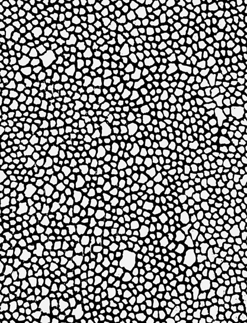

The Architecture of the Private Codex.
Maintaining a closed registry of historical masterwork studies alongside singular, primary-source anchor acquisitions. Operating entirely outside public auction houses and commercial retail channels.

Los desastres de la guerra: Plate 9, They do not want to
Etching, lavis, drypoint, and burin • 1810–20 (printed 1892)
Studied as a material benchmark for unsparing linear tension and dark tonal hierarchy within the reference archive.

Saltash with the Water Ferry, Cornwall
Oil on canvas • 1811
Examined for atmospheric dissolution and the structural weight of light across liquid boundaries.

The Dance Class
Oil on canvas • 1874
Referenced for asymmetrical spatial framing and rigorous observational geometry.

Eyes Closed
Lithograph • 1890
Included for symbolic density and monochrome subterranean resonance.

Pity
Relief etching, printed in color and finished with pen and ink • ca. 1795
Studied as an archetype of visionary substrate integration and mythological weight.

A Woman Making Water
Etching • Late 18th/Early 19th century
Retained for precision mark-making and classical chiaroscuro discipline.

Salvator Mundi
Oil on linden • ca. 1505
Analyzed for northern Renaissance material integrity and surface luminosity.

Don Quixote and Sancho Panza Entertained by Basil and Quiteria
Oil on canvas • 1863
Examined for theatrical scale and narrative density across expansive compositions.

Diverse Ways of Ornamenting Chimneypieces
Etching • 1769
Referenced for architectural precision and structural engraving rigor.

Horsewoman
Oil on canvas • 1820 or later
Studied for equestrian motion and dynamic pigment layering.

The Drinkers
Oil on wood • by 1861
Evaluated for psychological weight and compressed subterranean brushwork.

Retreat from the Storm
Oil on canvas • ca. 1846
Retained for elemental drama and dark textural atmosphere.

Bibi Valentin
Etching and drypoint • 1859
Studied for minimalist economy of line and tonal subtlety.

Comtesse de La Tour-Maubourg
Oil on canvas • 1841
Examined for classical portrait poise and deep pigment saturation.

Benedikt von Hertenstein
Oil and gold on paper, laid down on wood • 1517
Analyzed for exquisite gold leaf detailing and uncompromising facial realism.

Elizabeth of Russia
Oil on canvas • Circa 1999
Retained in private custody since creation. Pursuant to governing contractual protocols, exactly one authorized primary edition of this masterwork is released through this archive.
Direct Acquisition Desk
Submit a confidential mandate inquiry to the private desk. Protected under strict institutional privacy protocols.